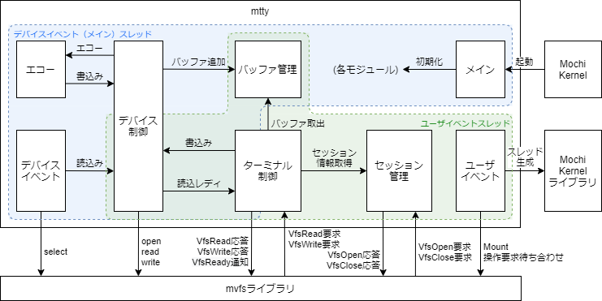
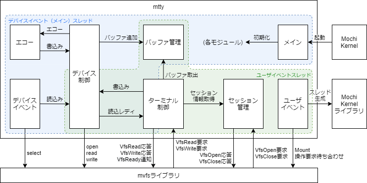

モジュール構成
mttyのモジュール構成を次に示す。
モジュール構成


モジュール概要
| # | モジュール名 | 動作スレッド | 概要 | |
| 和名 | 英名 | |||
| 1 | メイン | main | デバイスイベント （メイン） スレッド |
各モジュールの初期化を行う。 |
| 2 | デバイス イベント |
Devt | デバイスイベント （メイン） スレッド |
デバイスファイルをopenし、読込みレディ状態を監視する。読み込み可能となった時、デバイス制御モジュールのデバイスファイル読込み機能を起動する。 |
| 3 | デバイス 制御 |
Dctrl | 全スレッド | デバイスファイルからデータを読み込み、バッファ管理モジュールのバッファ追加機能を用いてデータをバッファリングし、エコーモジュールのエコー機能を起動する。また、デバイスファイルにデータを書き込む。 |
| 4 | エコー | Echo | デバイスイベント （メイン） スレッド |
制御コードを表示可能な文字列に変換し、デバイス制御モジュールのデバイスファイル書込み機能を起動する。 |
| 5 | バッファ 管理 |
Bufmng | 全スレッド | 読込バッファを管理する。 |
| 6 | ユーザ イベント |
Uevt | ユーザイベント スレッド |
ターミナルファイルを作成し、ターミナルファイルへの操作要求を待ち合わせる。 |
| 7 | セッション 管理 |
Sessmng | ユーザイベント スレッド |
ターミナルファイルのopen要求とclose要求を受け付けて、操作要求元タスクとグローバルファイルディスクリプタの管理を行う。 |
| 8 | ターミナル 制御 |
Tctrl | 全スレッド | ターミナルファイルのread要求とwrite要求を受け付ける。read要求時はバッファ管理モジュールのバッファ取出機能を用いてデータを取り出して応答し、write要求時はデバイス制御モジュールの書込み機能を用いてデータをデバイスに書き込む。また、ターミナルファイルの読込みレディ通知を行う。 |